Navegando
- Ilustración basada en un relato sobre una relación que terminó después de 8 años.
- Explora la duda entre el amor y la costumbre.
- Realizada en Krita.
- Septiembre 2025.


¡Hola! Soy Natalia, tengo 22 años y actualmente curso el tercer semestre de Multimedia y Producción Audiovisual. Desde muy pequeña he sentido una gran pasión por el dibujo, una actividad que me ha acompañado durante gran parte de mi vida y que ha influido en mi interés por el arte y la comunicación visual. Me destaco especialmente en la ilustración y la animación, áreas en las que disfruto explorar nuevas ideas, contar historias y dar vida a personajes. Me considero una persona creativa, curiosa y comprometida con el aprendizaje constante. Disfruto experimentar con diferentes técnicas y herramientas digitales, así como desarrollar proyectos relacionados con diseño, animación, fotografía y producción audiovisual.


Estoy disponible para proyectos de diseño, animación y creación visual. Si tienes una idea o proyecto en mente, no dudes en contactarme.